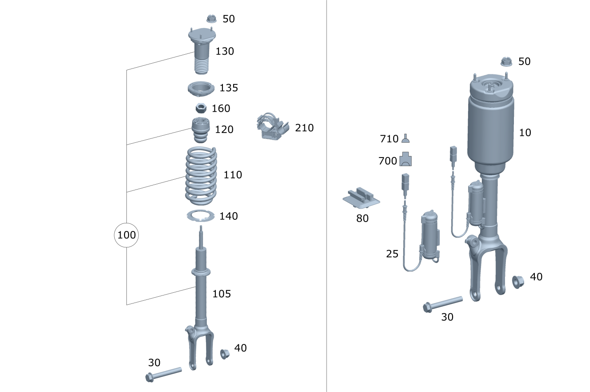

| № | Артикул | Название | Кол. | Примечание | Ограничение |
|---|---|---|---|---|---|
| 10 | A 251 320 30 13 | Амортизационная стойка (SUSPENSION STRUT) | 2 | передн. (лев. и прав.) | (489+214/M007+489+214)+-M156 |
| 10 | A 251 320 30 13 | Амортизационная стойка (SUSPENSION STRUT) | 2 | передн. (лев. и прав.) | 489+214+-M156 |
| 10 | A 251 320 56 13 | Амортизационная стойка (AIR SPRING STRUT) | 2 | передн. (лев. и прав.) | 489+214+-M156 |
| 10 | A 251 320 31 13 | Амортизационная стойка (SUSPENSION STRUT) | 2 | передн. (лев. и прав.) | (489+214/M007+489+214)+494+-M156 |
| 10 | A 251 320 31 13 | Амортизационная стойка (SUSPENSION STRUT) | 2 | передн. (лев. и прав.) | 489+214+494+-M156 |
| 25 | A 164 540 66 10 | - Жгут электропроводки (ELECTRICAL WIRING HARNESS) | 2 | АМОРТ. СТОЙКА НА ПЕРЕДНЕМ МОСТУ | 214 |
| 30 | N 910105 016002 | Винт с 6-гранной головкой | 2 | АМОРТ. СТОЙКА НА ПОПЕРЕЧ. РЫЧАГЕ; M16X1,5X120 | |
| 40 | N 000000 003343 | Гайка | 2 | АМОРТ. СТОЙКА НА ПОПЕРЕЧ. РЫЧАГЕ | |
| 40 | N 000000 007498 | Гайка (NUT) | 2 | АМОРТ. СТОЙКА НА ПОПЕРЕЧ. РЫЧАГЕ; M16X1,5 | |
| 50 | N 000000 003905 | Гайка (NUT) | 6 | КРЕПЛЕНИЕ АМОРТ. СТОЙКИ СВЕРХУ; M8 | |
| 50 | N 000000 005277 | Гайка (NUT) | 6 | КРЕПЛЕНИЕ АМОРТ. СТОЙКИ СВЕРХУ; M8 | |
| 80 | A 001 545 96 40 | Держатель (HOLDER) | 2 | КРЕПЛЕНИЕ ЖГУТА ЭЛЕКТРОПРОВОДКИ | 214 |
| 100 | A 251 320 37 13 | Амортизационная стойка | 2 | передн. (лев. и прав.) [412] БОЛЬШЕ НЕ ПОСТАВЛЯЕТСЯ, ЗАКАЗЫВАТЬ ОТДЕЛЬНЫЕ ДЕТАЛИ | -489 |
| 100 | A 251 320 37 13 | Амортизационная стойка | 2 | передн. (лев. и прав.) [412] БОЛЬШЕ НЕ ПОСТАВЛЯЕТСЯ, ЗАКАЗЫВАТЬ ОТДЕЛЬНЫЕ ДЕТАЛИ | -489 |
| 100 | A 251 320 37 13 | Амортизационная стойка | 2 | передн. (лев. и прав.) [412] БОЛЬШЕ НЕ ПОСТАВЛЯЕТСЯ, ЗАКАЗЫВАТЬ ОТДЕЛЬНЫЕ ДЕТАЛИ | -489 |
| 100 | A 251 320 28 13 | Амортизационная стойка (SUSPENSION STRUT) | 2 | передн. (лев. и прав.) [417] БОЛЬШЕ НЕ ПОСТАВЛЯЕТСЯ, ЗАКАЗЫВАТЬ КОМПЛЕКТ ПОСТАВКИ | 494+-489 |
| 100 | A 251 320 28 13 | Амортизационная стойка (SUSPENSION STRUT) | 2 | передн. (лев. и прав.) [417] БОЛЬШЕ НЕ ПОСТАВЛЯЕТСЯ, ЗАКАЗЫВАТЬ КОМПЛЕКТ ПОСТАВКИ | (494+488/494+488+M007)+-489 |
| 100 | A 251 320 28 13 | Амортизационная стойка (SUSPENSION STRUT) | 2 | передн. (лев. и прав.) [417] БОЛЬШЕ НЕ ПОСТАВЛЯЕТСЯ, ЗАКАЗЫВАТЬ КОМПЛЕКТ ПОСТАВКИ | 494+488+-489 |
| 100 | A 251 320 37 13 | Амортизационная стойка | 2 | передн. (лев. и прав.) [412] БОЛЬШЕ НЕ ПОСТАВЛЯЕТСЯ, ЗАКАЗЫВАТЬ ОТДЕЛЬНЫЕ ДЕТАЛИ | M007+488+-489 |
| 105 | A 251 320 03 30 | - Амортизатор (SHOCK ABSORBER) | 2 | передн. (лев. и прав.) | 494+-489 |
| 105 | A 251 320 03 30 | - Амортизатор (SHOCK ABSORBER) | 2 | передн. (лев. и прав.) | 494+488+-489 |
| 105 | A 251 320 08 30 | - Амортизатор (SHOCK ABSORBER) | 2 | передн. (лев. и прав.) | M007+-489 |
| 105 | A 251 320 07 30 | - Амортизатор (SHOCK ABSORBER) | 2 | передн. (лев. и прав.) | M007+488+-489 |
| 105 | A 251 320 07 30 | - Амортизатор (SHOCK ABSORBER) | 2 | передн. (лев. и прав.) | -489 |
| 110 | A 164 321 01 04 | - Винтовая пружина (HELICAL SPRING) | 2 | ЦВЕТНАЯ МАРКИРОВКА: 1 X ЖЕЛТАЯ [T067] IN ORDER TO DETERMINE THE FRONT SPRINGS THE POINTS IN THE FOLLOWING TABLE FOR THE RESPECTIVE MODEL SERIES AND THE SPECIAL VERSION AS INSTALLED ARE TO BE ADDED UP ============================================================================================================================= MODEL DES. NUMBER OF POINTS CODE SPECIAL EQUIPMENT NO.OF PTS 251.121 290 225 REAR CENTER INDIVIDUAL SEAT 1 251.122/123 298 228 AUXILIARY HEATER 1 251.124/125 298 289 WOOD/LEATHER STEERING WHEEL 1 251.126 290 413 PANORAMIC ROOF 4 251.154/156 276 414 ELECTR. GLASS TILTING/SLID. ROOF 2 251.154 + 494 277 481 UNDERBODY PROTECTION 3 251.156 + 494 277 527/530 COMAND DVD NAVIGATION 1 251.157 288 580/581 AIR CONDITIONING 2 251.165 285 596 HEAT-INS. LAMINATED GLASS ALL-RD 1 251.165 + 494 286 615/616 BI-XENON WITH CURVE ILLUMINATION 1 251.172 292 810 SOUND SYSTEM 1 251.172 + 494 293 837 DRIVER A. REAR FLOOR RUBBER MATS 1 251.175 287 U11/U12 FLOOR MATS: RIBBED/VELOUR 1 U40 CARGO NET BEHIND DRIVER SEATS 1 U42 BLUETEC 1 ============================================================================================================================== POINTS TOTAL FRONT SPRINGS -304 A 164 321 01 04 305- A 164 321 02 04 ============================================================================================================================== [001019] ТАКЖЕ ИСПОЛЬЗОВАТЬ: 1 X A 164 324 00 84 | -489 |
| 110 | A 251 321 03 04 | - Винтовая пружина (HELICAL SPRING) | 2 | ЦВЕТНАЯ МАРКИРОВКА: 1 X ЖЕЛТАЯ [001019] ТАКЖЕ ИСПОЛЬЗОВАТЬ: 1 X A 164 324 00 84 [T210] IN ORDER TO DETERMINE THE FRONT SPRINGS THE POINTS IN THE FOLLOWING TABLE FOR THE RESPECTIVE MODEL SERIES AND THE SPECIAL VERSION AS INSTALLED ARE TO BE ADDED UP ============================================================================================================================= MOD. DES. NO. OF POINTS CODE SPECIAL EQUIPMENT NO.POINTS 251.122 298 225 REAR CENTER INDIVIDUAL SEAT 1 251.123 298 228 AUXILIARY HEATER 1 251.124/125 298 289 WOOD/LEATHER STEERING WHEEL 1 251.126 290 413 PANORAMIC ROOF 4 251.154/156 276 414 ELECTR. GLASS TILTING/SLID. ROOF 2 251.154 + 494 275 481 UNTERBODY PROTECTION 3 251.156 + 494 275 527/530 COMAND DVD NAVIGATION 1 251.157 288 580/581 A/C 2 251.163 276 596 HEAT-INS. LAMIN. GLASS ALL-ROUND 1 251.165 285 615/616 BI-XENON WITH CURVE ILLUMINATION 1 251.165 + 494 286 810 SOUND SYSTEM 1 251.172 292 837 RUBBER MATS, DRIVER & REAR FLOOR 1 251.172 + 494 293 U11/U12 FLOOR MATS: RIBBED/PILE 1 U40 CARGO NET BEHIND DRIVER SEATS 1 U42 BLUETEC 1 ============================================================================================================================== POINTS TOTAL FRONT SPRINGS -274 A 251 321 05 04 275-304 A 251 321 03 04 305- A 251 321 04 04 ============================================================================================================================== | -489 |
| 110 | A 251 321 04 04 | - Винтовая пружина (HELICAL SPRING) | 2 | ЦВЕТ.ОБОЗНАЧ.:1 X СВЕТЛ.ЗЕЛЕН. [001019] ТАКЖЕ ИСПОЛЬЗОВАТЬ: 1 X A 164 324 00 84 [T210] IN ORDER TO DETERMINE THE FRONT SPRINGS THE POINTS IN THE FOLLOWING TABLE FOR THE RESPECTIVE MODEL SERIES AND THE SPECIAL VERSION AS INSTALLED ARE TO BE ADDED UP ============================================================================================================================= MOD. DES. NO. OF POINTS CODE SPECIAL EQUIPMENT NO.POINTS 251.122 298 225 REAR CENTER INDIVIDUAL SEAT 1 251.123 298 228 AUXILIARY HEATER 1 251.124/125 298 289 WOOD/LEATHER STEERING WHEEL 1 251.126 290 413 PANORAMIC ROOF 4 251.154/156 276 414 ELECTR. GLASS TILTING/SLID. ROOF 2 251.154 + 494 275 481 UNTERBODY PROTECTION 3 251.156 + 494 275 527/530 COMAND DVD NAVIGATION 1 251.157 288 580/581 A/C 2 251.163 276 596 HEAT-INS. LAMIN. GLASS ALL-ROUND 1 251.165 285 615/616 BI-XENON WITH CURVE ILLUMINATION 1 251.165 + 494 286 810 SOUND SYSTEM 1 251.172 292 837 RUBBER MATS, DRIVER & REAR FLOOR 1 251.172 + 494 293 U11/U12 FLOOR MATS: RIBBED/PILE 1 U40 CARGO NET BEHIND DRIVER SEATS 1 U42 BLUETEC 1 ============================================================================================================================== POINTS TOTAL FRONT SPRINGS -274 A 251 321 05 04 275-304 A 251 321 03 04 305- A 251 321 04 04 ============================================================================================================================== | -489 |
| 110 | A 251 321 05 04 | - Винтовая пружина (HELICAL SPRING) | 2 | ЦВЕТОВОЕ ОБОЗНАЧЕНИЕ: 1 X СВЕТЛОСЕРЫЙ [001019] ТАКЖЕ ИСПОЛЬЗОВАТЬ: 1 X A 164 324 00 84 [T210] IN ORDER TO DETERMINE THE FRONT SPRINGS THE POINTS IN THE FOLLOWING TABLE FOR THE RESPECTIVE MODEL SERIES AND THE SPECIAL VERSION AS INSTALLED ARE TO BE ADDED UP ============================================================================================================================= MOD. DES. NO. OF POINTS CODE SPECIAL EQUIPMENT NO.POINTS 251.122 298 225 REAR CENTER INDIVIDUAL SEAT 1 251.123 298 228 AUXILIARY HEATER 1 251.124/125 298 289 WOOD/LEATHER STEERING WHEEL 1 251.126 290 413 PANORAMIC ROOF 4 251.154/156 276 414 ELECTR. GLASS TILTING/SLID. ROOF 2 251.154 + 494 275 481 UNTERBODY PROTECTION 3 251.156 + 494 275 527/530 COMAND DVD NAVIGATION 1 251.157 288 580/581 A/C 2 251.163 276 596 HEAT-INS. LAMIN. GLASS ALL-ROUND 1 251.165 285 615/616 BI-XENON WITH CURVE ILLUMINATION 1 251.165 + 494 286 810 SOUND SYSTEM 1 251.172 292 837 RUBBER MATS, DRIVER & REAR FLOOR 1 251.172 + 494 293 U11/U12 FLOOR MATS: RIBBED/PILE 1 U40 CARGO NET BEHIND DRIVER SEATS 1 U42 BLUETEC 1 ============================================================================================================================== POINTS TOTAL FRONT SPRINGS -274 A 251 321 05 04 275-304 A 251 321 03 04 305- A 251 321 04 04 ============================================================================================================================== | -489 |
| 110 | A 164 321 02 04 | - Винтовая пружина (HELICAL SPRING) | 2 | ЦВЕТ.ОБОЗНАЧ.:1 X СВЕТЛ.ЗЕЛЕН. [T067] IN ORDER TO DETERMINE THE FRONT SPRINGS THE POINTS IN THE FOLLOWING TABLE FOR THE RESPECTIVE MODEL SERIES AND THE SPECIAL VERSION AS INSTALLED ARE TO BE ADDED UP ============================================================================================================================= MODEL DES. NUMBER OF POINTS CODE SPECIAL EQUIPMENT NO.OF PTS 251.121 290 225 REAR CENTER INDIVIDUAL SEAT 1 251.122/123 298 228 AUXILIARY HEATER 1 251.124/125 298 289 WOOD/LEATHER STEERING WHEEL 1 251.126 290 413 PANORAMIC ROOF 4 251.154/156 276 414 ELECTR. GLASS TILTING/SLID. ROOF 2 251.154 + 494 277 481 UNDERBODY PROTECTION 3 251.156 + 494 277 527/530 COMAND DVD NAVIGATION 1 251.157 288 580/581 AIR CONDITIONING 2 251.165 285 596 HEAT-INS. LAMINATED GLASS ALL-RD 1 251.165 + 494 286 615/616 BI-XENON WITH CURVE ILLUMINATION 1 251.172 292 810 SOUND SYSTEM 1 251.172 + 494 293 837 DRIVER A. REAR FLOOR RUBBER MATS 1 251.175 287 U11/U12 FLOOR MATS: RIBBED/VELOUR 1 U40 CARGO NET BEHIND DRIVER SEATS 1 U42 BLUETEC 1 ============================================================================================================================== POINTS TOTAL FRONT SPRINGS -304 A 164 321 01 04 305- A 164 321 02 04 ============================================================================================================================== [001019] ТАКЖЕ ИСПОЛЬЗОВАТЬ: 1 X A 164 324 00 84 | -489 |
| 110 | A 251 321 03 04 | - Винтовая пружина (HELICAL SPRING) | 2 | ЦВЕТНАЯ МАРКИРОВКА: 1 X ЖЕЛТАЯ [001019] ТАКЖЕ ИСПОЛЬЗОВАТЬ: 1 X A 164 324 00 84 [T210] IN ORDER TO DETERMINE THE FRONT SPRINGS THE POINTS IN THE FOLLOWING TABLE FOR THE RESPECTIVE MODEL SERIES AND THE SPECIAL VERSION AS INSTALLED ARE TO BE ADDED UP ============================================================================================================================= MOD. DES. NO. OF POINTS CODE SPECIAL EQUIPMENT NO.POINTS 251.122 298 225 REAR CENTER INDIVIDUAL SEAT 1 251.123 298 228 AUXILIARY HEATER 1 251.124/125 298 289 WOOD/LEATHER STEERING WHEEL 1 251.126 290 413 PANORAMIC ROOF 4 251.154/156 276 414 ELECTR. GLASS TILTING/SLID. ROOF 2 251.154 + 494 275 481 UNTERBODY PROTECTION 3 251.156 + 494 275 527/530 COMAND DVD NAVIGATION 1 251.157 288 580/581 A/C 2 251.163 276 596 HEAT-INS. LAMIN. GLASS ALL-ROUND 1 251.165 285 615/616 BI-XENON WITH CURVE ILLUMINATION 1 251.165 + 494 286 810 SOUND SYSTEM 1 251.172 292 837 RUBBER MATS, DRIVER & REAR FLOOR 1 251.172 + 494 293 U11/U12 FLOOR MATS: RIBBED/PILE 1 U40 CARGO NET BEHIND DRIVER SEATS 1 U42 BLUETEC 1 ============================================================================================================================== POINTS TOTAL FRONT SPRINGS -274 A 251 321 05 04 275-304 A 251 321 03 04 305- A 251 321 04 04 ============================================================================================================================== | (494+488)+-489 |
| 110 | A 251 321 04 04 | - Винтовая пружина (HELICAL SPRING) | 2 | ЦВЕТ.ОБОЗНАЧ.:1 X СВЕТЛ.ЗЕЛЕН. [001019] ТАКЖЕ ИСПОЛЬЗОВАТЬ: 1 X A 164 324 00 84 [T210] IN ORDER TO DETERMINE THE FRONT SPRINGS THE POINTS IN THE FOLLOWING TABLE FOR THE RESPECTIVE MODEL SERIES AND THE SPECIAL VERSION AS INSTALLED ARE TO BE ADDED UP ============================================================================================================================= MOD. DES. NO. OF POINTS CODE SPECIAL EQUIPMENT NO.POINTS 251.122 298 225 REAR CENTER INDIVIDUAL SEAT 1 251.123 298 228 AUXILIARY HEATER 1 251.124/125 298 289 WOOD/LEATHER STEERING WHEEL 1 251.126 290 413 PANORAMIC ROOF 4 251.154/156 276 414 ELECTR. GLASS TILTING/SLID. ROOF 2 251.154 + 494 275 481 UNTERBODY PROTECTION 3 251.156 + 494 275 527/530 COMAND DVD NAVIGATION 1 251.157 288 580/581 A/C 2 251.163 276 596 HEAT-INS. LAMIN. GLASS ALL-ROUND 1 251.165 285 615/616 BI-XENON WITH CURVE ILLUMINATION 1 251.165 + 494 286 810 SOUND SYSTEM 1 251.172 292 837 RUBBER MATS, DRIVER & REAR FLOOR 1 251.172 + 494 293 U11/U12 FLOOR MATS: RIBBED/PILE 1 U40 CARGO NET BEHIND DRIVER SEATS 1 U42 BLUETEC 1 ============================================================================================================================== POINTS TOTAL FRONT SPRINGS -274 A 251 321 05 04 275-304 A 251 321 03 04 305- A 251 321 04 04 ============================================================================================================================== | (494+488)+-489 |
| 120 | A 251 323 00 44 | - Резиновый буфер (RUBBER BUMPER) | 2 | АМОРТИЗАЦИОННАЯ СТОЙКА | -489 |
| 130 | A 251 320 00 26 | - Тарелка пруж. амор.стойки (SPRING RETAINER FOR STRUT) | 2 | КОМПЛЕКТ ДЕТАЛЕЙ, СПЕРЕДИ | -489 |
| 135 | A 166 326 04 67 | - Тарелка пружины (SPRING RETAINER) | 2 | СВЕРХУ СЛЕВА И СПРАВА; I \- E | -489 |
| 140 | A 164 324 00 84 | Прокладка рессоры (HELICAL SPRING SHIM) | 2 | ПРУЖИНА | -489 |
| 160 | N 913023 010004 | Гайка (NUT) | 2 | M10X1 | -489 |
| 700 | A 210 540 21 81 | Сцепление, механическое (COUPLING, MECHANICAL) | 1 | ДЕМПФ. МОДУЛЬ СЛЕВА Y51,Y52; 3\-PIN MQS | |
| 710 | A 008 545 63 26 | Контактная втулка (CONTACT SOCKET) | NB | Y51,Y52; 0.5\-0.75 MM2 MQS ELA |
Позиций: 38 · подписано на схемах: 38 · колесо — плавный зум в курсор, перетаскивание — пан, двойной клик — зум, клик по артикулу — скопировать · наведите на строку или цифру на схеме — подсветка связки, клик — закрепить.